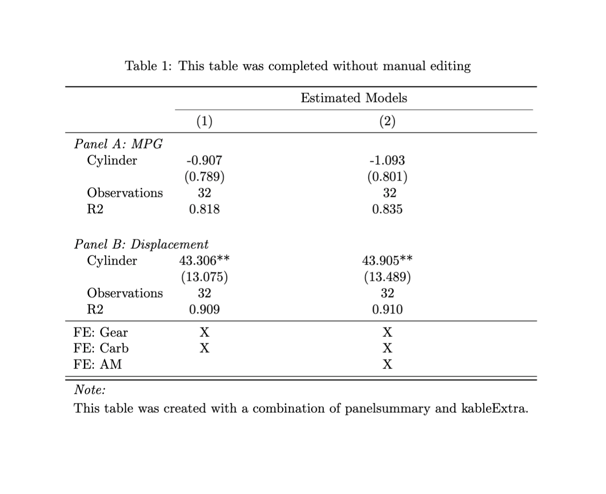

panelsummary creates publication-quality regression tables that have multiple panels. Paneled regression tables are particularly useful for showing output for models that are estimated with multiple dependent variables. A simple call to panelsummary::panelsummary will create a regression table that can be viewed in the RStudio Viewer panel, be edited with kableExtra’s suite of customization functions, and be output to latex.
As of now, panelsummary is intended for use with the fixest package, although more model classes are planned. Please use the panelsummary::models_supported function to view a list of all model classes that are currently supported.
Installation
You can install the development version of panelsummary from GitHub with:
# install.packages("devtools")
devtools::install_github("michaeltopper1/panelsummary")What makes panelsummary different?
panelsummary can easily create beautiful paneled tables without any manual editing:

Edit with kableExtra
One of the strongest cases to use panelsummary is that it returns a kableExtra object. This means that you can easily customize your table using kableExtra’s suite of functions with the pipe operator (|>).
Use modelsummary arguments
Under the hood, panelsummary::panelsummary calls modelsummary::modelsummary and inherits many of the same arguments. Some examples of arguments that are shared:
-
stars- indicate significance. -
coef_map- subset, rename, and reorder coefficients. -
coef_omit- use regular expressions to determine which coefficients should be omitted from the table. -
gof_map- rename, reorder, and omit goodness-of-fit statistics.
Learn more!
To learn more about panelsummary, get started with the introductory vignette.